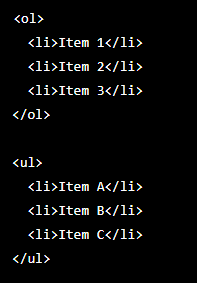
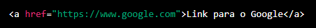
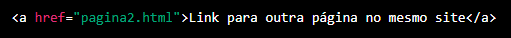

Primeiros Passos com HTML
Índice
Internet - Como surgiu?
A internet surgiu na década de 1960 como um projeto do governo dos Estados
Unidos chamado ARPANET, com o objetivo de criar uma rede de comunicação
confiável que pudesse resistir a uma possível guerra nuclear. A tecnologia
desenvolvida permitiu a comunicação entre computadores em diferentes locais
e foi evoluindo para incluir a comunicação entre redes de diferentes
organizações, dando origem à internet moderna.
(Voltar)
O que é HTML?
O HTML é uma linguagem. De programação? Não! É uma linguagem de marcação que
os browsner combinaram em seguir que a partir de um momento que isere
determinadas tags o broswer vai interpretar aquilo e vai escrever ou
desenhar algo na tela. Foi feito para rodar em navegadores. Para de fato
usar o html usamos as tags sendo que existem muitas. As tags possuem
atributos que podem conter valores. O atributo embora possa ser o mesmo os
valores podem diferir.
(Voltar)
Estrutura Básica
A estrutura básica de um documento HTML consiste em uma série de tags HTML,
que são marcas especiais colocadas no texto do documento para indicar como
ele deve ser exibido pelo navegador. As tags HTML mais comuns incluem:
html: indica o início e o fim do documento HTML.
head: contém informações sobre o documento, como o título (que é
exibido na aba do navegador) e links para folhas de estilo CSS.
body: contém o conteúdo visível do documento, como texto, imagens e
links.
p: indica um parágrafo.
a: cria um link para outro documento ou página.
img: inclui uma imagem no documento.
div: cria uma divisão ou seção no documento.
É importante notar que as tags HTML geralmente precisam ser fechadas, ou
seja, se tem uma abertura deve haver um fechamento.
(Voltar)
Atributos
Os atributos HTML são valores adicionais que podem ser incluídos em uma tag
HTML para fornecer informações adicionais sobre como a tag deve ser exibida
ou comportar-se. Alguns exemplos de atributos comuns incluem:
class: define uma classe para uma tag, que pode ser usada para
estilizá-la usando CSS.
id: define um identificador exclusivo para uma tag, que pode ser
usado para estilizá-la ou referenciá-la usando JavaScript.
src:especifica a fonte de uma imagem ou outro conteúdo incluído em
uma tag, como em uma tag img ou iframe
href: especifica o endereço de uma página ou recurso a ser linkado em
uma tag a.
style: especifica estilos CSS inline para uma tag
Os atributos podem ser adicionados a uma tag HTML escrevendo-os dentro da
tag, seguido do seu valor. Por exemplo, para adicionar um atributo de classe
a uma tag p, pode ser escrito como p class="exemplo".
(Voltar)
Texto
Quando falamos de texto em HTML, estamos falando de tipografia HTML. A
tipografia na WEB é uma parte importante e oferece várias tags para
controlar a formatação de texto. Algumas das tags de tipografia mais comuns
incluem:
p: Usada para criar parágrafos de texto.
h1 a h6: Usadas para criar títulos e subtítulos, com
h1 sendo o título mais importante e h6 sendo o menos
importante.
b e strong: Usadas para deixar o texto em negrito. A diferença
entre elas é que strong indica que o texto tem importância semântica,
enquanto b é apenas uma formatação.
i e em: Usadas para deixar o texto em itálico. Assim como as
tags de negrito, em indica que o texto tem importância semântica,
enquanto i é apenas uma formatação.
u: Usada para sublinhar o texto.
br: Usada para criar uma quebra de linha.
(Voltar)
Listas
Em HTML, existem duas principais tags para criar listas:ol(lista
ordenada) e ul (lista não ordenada). A tag ol é usada para
criar uma lista ordenada, ou seja, uma lista em que cada item tem um número
associado. Por padrão, os números são ordinais (1, 2, 3, etc.), mas também é
possível usar outros tipos de números, como romanos, através do atributo
type. Cada item da lista deve ser incluído dentro de uma tag
li.
A tag ul é usada para criar uma lista não ordenada, ou seja, uma
lista em que cada item é marcado com um símbolo específico (geralmente um
bullet point). Cada item da lista deve ser incluído dentro de uma tag
li.
Exemplo:

Além disso, é possível usar listas aninhadas, onde uma lista é incluída
dentro de um item de outra lista. Isso pode ser feito usando as tags
ol e ul dentro de uma tag li. É possível também
utilizar estilos CSS para customizar a formatação das listas, como alterar a
cor do bullet point ou número, alterar a fonte, entre outros.
(Voltar)
Link
Os links, ou hiperlinks, são uma das principais características da web e são
usados para navegar entre páginas ou outros recursos. Em HTML, os links são
criados usando a tag a, que é usada para criar um link para outro
documento ou recurso. A tag a é usada com o atributo href (hypertext
reference), que indica qual é o endereço do recurso a ser linkado. Por
exemplo: 
Além disso, é possível usar links para navegar para outras páginas dentro do
mesmo site, usando caminhos relativos, exemplo:

É possível também usar links para outros recursos como, arquivos PDF,
Imagens, videos e etc, usando tanto caminhos relativos ou absolutos. É
importante notar que é possível utilizar atributos como target para
controlar como o link será aberto, como por exemplo, abrir em nova aba ou
janela, e também é possível utilizar estilos CSS para customizar a
apresentação do link.
(Voltar)
Referências
W3Schools: https://www.w3schools.com
DIO.me - Formação HTML Web Developer:
https://dio.me
(Voltar)